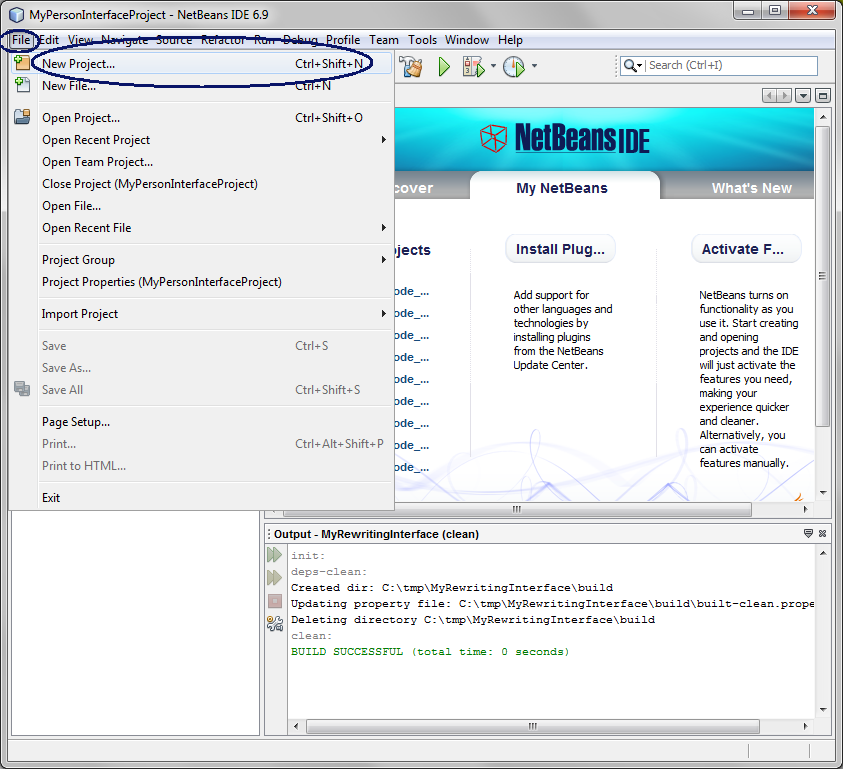
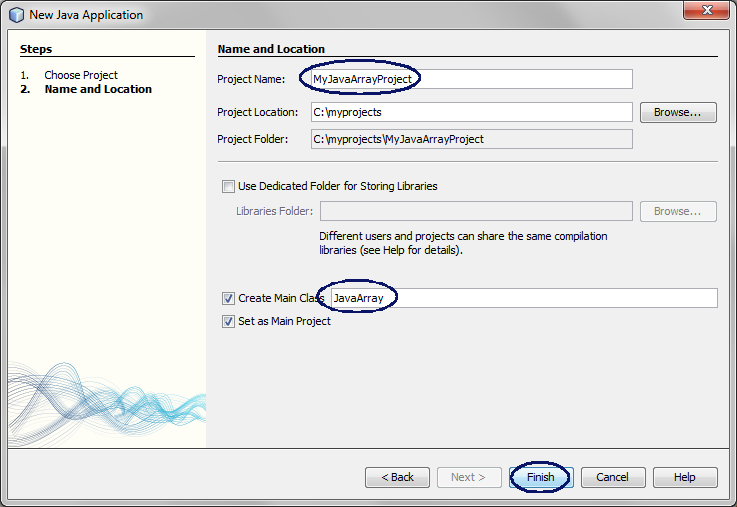
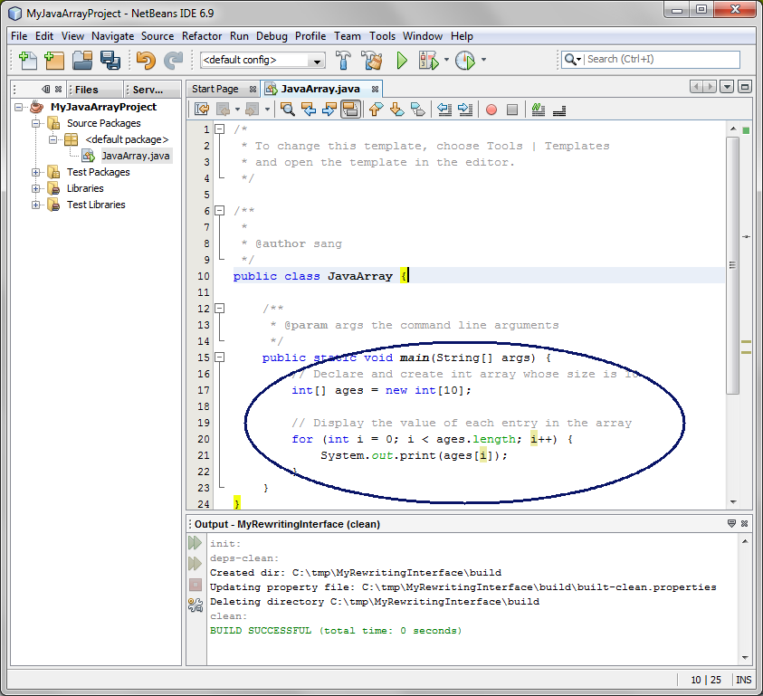
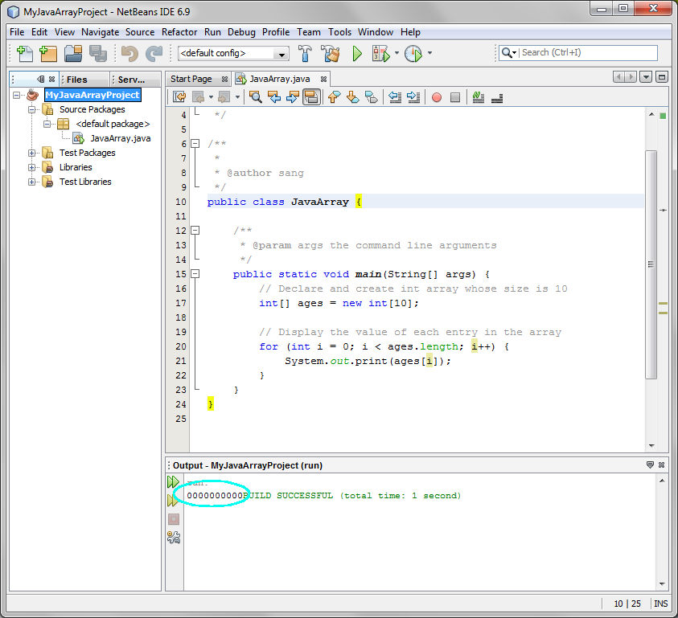

Java Array

Array is one of the most fundamental
data structure of any programming language. In this lab, you are going
to learn the basic concept of Array by creating an array, adding and
removing items to and from the array.
Expected duration: 60 minutes


Change Log
- Jan. 31st, 2007: Created
- July 13th, 2010: Upated and tested with NetBeans 6.9, Lab zip
file name is changed to 1036_javase_array.zip (Sang Shin)
Lab Exercises
Exercise 1: Build and run Java programs
that use Java array of int
In this exercise, you are going to
build simple Java applications that use array of int.
- Build and run a Java program that uses
single-dimensional array of int
- Build and run a Java program that uses
two-dimensional array of int
- Build and run a Java program that computes the
greatest number
(1.1)
Build and run a Java program that uses single-demensional array of int
1. Create a NetBeans project
- Select File from
top-level menu and
select New Project. (Or click
Ctrl+Shift+N key combination.)

- Observe that the New Project
dialog box appears.
- Select Java under Categories section and Java Application under Projects section.
- Click Next.
- Under Name
and Location pane, for the Project
Name field, enter MyJavaArrayProject.
- For the Create Main Class
field, enter JavaArray.
(Figure-1.10 below)
- Click Finish.

Figure-1.10: Create a new NetBeans project
- Observe that the MyJavaArrayProject
project node is created
under Projects pane of the
NetBeans IDE and IDE generated JavaArray.java
is displayed in the editor window of the IDE.
2. Modify the IDE generated JavaArray.java.
- Modify the JavaArray.java
as
shown in Code-1.11 and
Figure-1.12 below.
public class JavaArray
{
/**
* @param args the command line arguments
*/
public static void main(String[] args) {
// Declare and create int array whose size
is 10
int[] ages = new int[10];
// Display the value of each entry in the
array
for( int i=0;
i<ages.length; i++ ){
System.out.print( ages[i] );
}
}
}
|
Code-1.11: Modified JavaArray.java

Figure-1.12
3. Build and run the program
- Right click MyJavaArrayProject and
select Run.
- Observe the result in the Output window. (Figure-1.12 below)
Figure-1.13: Result

4. (For your own exercise) Modify
JavaArray.java as
following, build and run the program.
- Just before the for loop
that prints out the value of each entry
of the ages[] array, create another for
loop in which a value of 100 is
assigned to the first entry of the array, ages[0], 101 to the next
entry of the array, ages[1], and so on.
(1.2)
Build and run a Java program that uses two-dimensional array of int
1. Create a NetBeans project
- Select File from
top-level menu and
select New Project.
- Observe that the New Project
dialog box appears.
- Select Java under Categories section and Java Application under Projects section.
- Click Next.
- Under Name
and Location pane, for the Project
Name field, enter MyJavaTwoDimensionArrayProject.
- For the Create Main Class
field, enter JavaTwoDimensionArray.
(Figure-1.10 below)
- Click Finish.
- Observe that the MyJavaTwoDimensionArrayProject
project node is created
under Projects pane of the
NetBeans IDE and IDE generated JavaTwoDimensionArray.java
is displayed in the editor window of the IDE.
2. Modify the IDE generated JavaTwoDimensionArray.java.
- Modify the JavaTwoDimensionArray.java
as
shown in Code-1.11 below.
public class
JavaTwoDimensionArray {
/**
* @param args the command line arguments
*/
public static void main(String[] args) {
// Declare and create two dimensional int
array whose size is 10 by 5
int[][] ages = new
int[10][5];
// Display the number of rows and columns
System.out.println("ages.length = " + ages.length);
System.out.println("ages[1].length = " + ages[1].length);
// Display the value of each entry in the array
for( int i=0;
i<ages.length; i++ ){
System.out.println("\nStarting row " + i);
for(
int j=0; j<ages[i].length; j++ ){
ages[i][j] = i * j;
System.out.print( ages[i][j] + " " );
}
}
}
}
|
Code-1.11: Modified JavaTwoDimension
Array.java
3. Build and run the program
- Right click MyJavaTwoDimensionArrayProject
and select Run.
- Observe the result in the Output window. (Figure-1.12 below)
ages.length = 10
ages[1].length = 5
Starting row 0
0 0 0 0 0
Starting row 1
0 1 2 3 4
Starting row 2
0 2 4 6 8
Starting row 3
0 3 6 9 12
Starting row 4
0 4 8 12 16
Starting row 5
0 5 10 15 20
Starting row 6
0 6 12 18 24
Starting row 7
0 7 14 21 28
Starting row 8
0 8 16 24 32
Starting row 9
0 9 18 27 36
|
Figure-1.12: Result
4. (For your own exercise) Create a
NetBeans project as following. Build and run the program.
- Declare and initialize 3-dimensional array of int
- Initialize each cell with increasing integer number starting from
1000, 1001, 1002, and so on.
(1.3)
Build and run a Java program that finds the greatest number
1. Create a NetBeans project
- Select File from
top-level menu and
select New Project.
- Observe that the New Project
dialog box appears.
- Select Java under Categories section and Java Application under Projects section.
- Click Next.
- Under Name
and Location pane, for the Project
Name field, enter MyGreatestNumberProject.
- For the Create Main Class
field, enter GreatestNumber.
(Figure-1.10 below)
- Click Finish.
- Observe that the MyGreatestNumberProject
project node is created
under Projects pane of the
NetBeans IDE and IDE generated GreatestNumber.java
is displayed in the editor window of the IDE.
2. Modify the IDE generated GreatestNumber.java.
- Modify the GreatestNumber.java
as
shown in Code-1.11 below.
import javax.swing.JOptionPane;
public class GreatestNumber {
public static void main(String[] args) {
int[] num = new int[10];
int counter;
int max = 0;
int totalnumber = 3;
// Prompt a user to enter numbers
for(counter = 0; counter
< totalnumber; counter++){
num[counter] = Integer.parseInt
(JOptionPane.showInputDialog("Enter numbers until " + totalnumber + "
numbers are entered"));
// Compute the greatest number up to this
point
if((counter == 0)||(num[counter] > max))
max = num[counter];
}
// Display the greatest number.
JOptionPane.showMessageDialog(null,"The number with the greatest value
is " + max);
}
}
|
Code-1.11: Modified GreatestNumber.java
3. Build and run the program
- Right click MyGreatestNumberProject and select Run.
- Enter 3 numbers.
- Observe that the greatest number is displayed.
4. (For your own exercise) Modify
MyGreatestNumberProject as following:
- Compute the smallest number and display it.
Summary
In this exercise, you learned how to use
Java array.
return to the top
Exercise 2: Build and run Java programs
that use Java array of String
In this exercise, you are going to
build simple Java applications that use array of
String.
- Build and run a Java program that uses
single-dimentional array of String
(2.1)
Build and run a Java program
1. Create a NetBeans project
- Select File from
top-level menu and
select New Project.
- Observe that the New Project
dialog box appears.
- Select Java under Categories section and Java Application under Projects section.
- Click Next.
- Under Name
and Location pane, for the Project
Name field, enter MyDaysOfTheWeekProject.
- For the Create Main Class
field, enter DaysOfTheWeek.
- Click Finish.
2. Modify the IDE generated DaysOfTheWeek.java.
- Modify the DaysOfTheWeek.java
as
shown in Code-2.11 below.
public class DaysOfTheWeek {
public static void main(String[] args) {
// Declare and initialize String array of
the days of the week
String[] days =
{"Sunday","Monday","Tuesday","Wednesday",
"Thursday","Friday","Saturday"};
// Display days of the week using while loop
System.out.println("Display
days of week using while loop");
int counter = 0;
while(counter <
days.length){
System.out.println(days[counter]);
counter++;
}
// Display days of the week using do-while
loop
System.out.println("Display
days of week using do-while loop");
counter = 0;
do{
System.out.println(days[counter]);
counter++;
} while(counter <
days.length);
// Display days of the week using for loop
System.out.println("Display
days of week using for loop");
for(counter = 0; counter
< days.length; counter++){
System.out.println(days[counter]);
}
}
}
|
Code-2.11: Modified DaysOfTheWeek.java
3. Build and run the program
- Right click MyDaysOfTheWeekProject and select Run.
- Observe that the days of the week are displayed 3 times.
(Figure-2.12 below)
Display days of week using while
loop
Sunday
Monday
Tuesday
Wednesday
Thursday
Friday
Saturday
Display days of week using do-while loop
Sunday
Monday
Tuesday
Wednesday
Thursday
Friday
Saturday
Display days of week using for loop
Sunday
Monday
Tuesday
Wednesday
Thursday
Friday
Saturday
|
Figure-2.12: Result
Homework
exercise
1. The homework is to create the MyOwnJavaArrayProject
project
as following:
- Ask
the English version of the full names (first-name last-name) of three
of your family members using showInputDialog()
method of the JOptionPane class.
- Display the name of the family member who has the longest first
name (not the longest of the total name) as following. (If
there is a tie, just
display one of the two.)
- Daniel Shin has the longest first name
Hint: You will have use various methods
of String class. The
following is an example code fragment you might be able to use.
Please feel free to use alternative ways of doing the homework.
// Get the first name from a
name string using split() instance (non-static) method
String[] nameArrayForPerson1 = person1NameInstance.split(" ");
String[] nameArrayForPerson2 = person2NameInstance.split(" ");
// Get the lengths of strings using length() instance (non-static)
method
int lengthOfFirstNameOfPerson1 = nameArrayForPerson1[0].length();
int lengthOfFirstNameOfPerson2 = nameArrayForPerson2[0].length();
// Compare the lengths of the first names between person1 and person2
if (lengthOfFirstNameOfPerson1 > lengthOfFirstNameOfPerson2){
System.out.println(nameArrayForPerson1[0] +
" has longer first name than " +
nameArrayForPerson2[0]);
} |
- Zip file of the
MyOwnJavaArrayProject
NetBeans project. (Someone else
should be able to open and run it as a NetBeans project.) You can
use your favorite zip utility or you can use "jar" utility that comes
with JDK as following.
- cd <parent directory that contains MyOwnJavaArray
directory>
(assuming you named your project as MyOwnJavaArrayProject)
- jar cvf MyOwnJavaArrayProject.zip MyOwnJavaArrayProject (MyOwnJavaArrayProject should
contain nbproject directory)
- Captured output screen -
name it as javase_array.gif
or javase_array.jpg (or javase_array.<whatever
graphics format>)
- Any screen capture that shows that your program is working is
good enough. No cosmetic polishment is required.
- If you decide to use
different IDE other than NetBeans, the zip
file should contain all the files that are needed for rebuilding the
project - war file with necessary source files is OK.